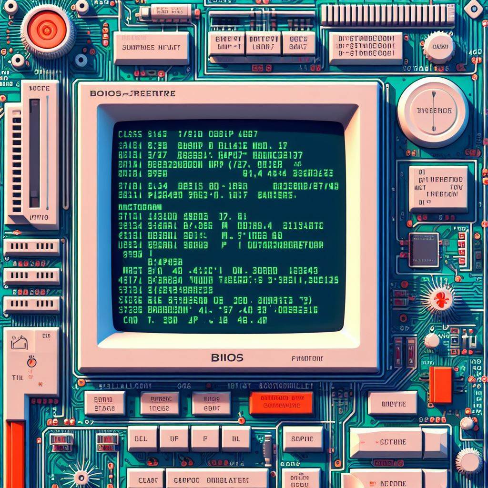
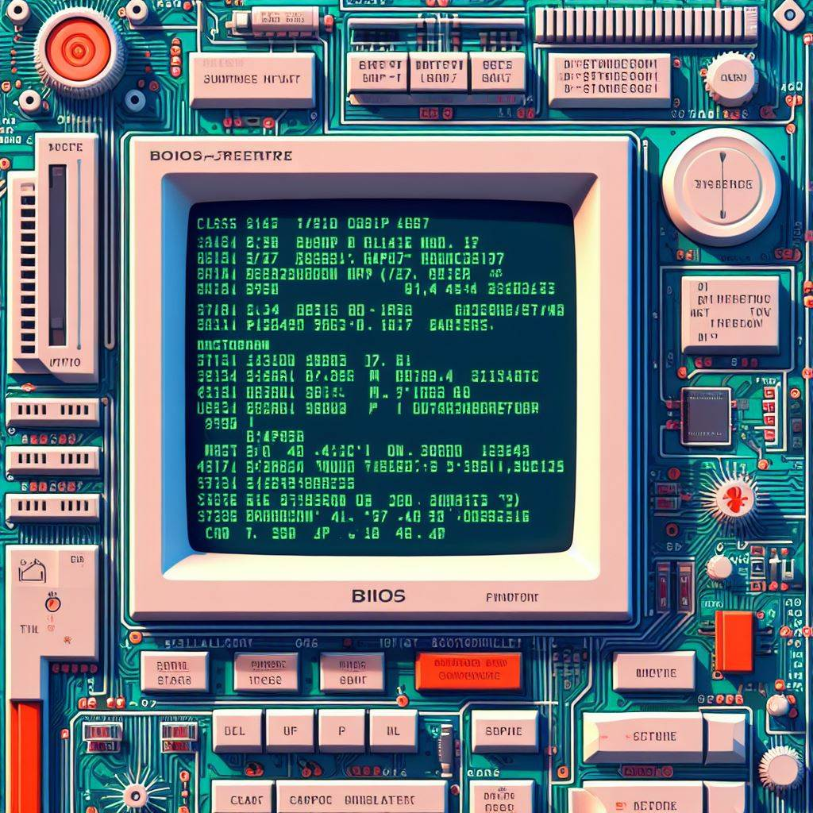
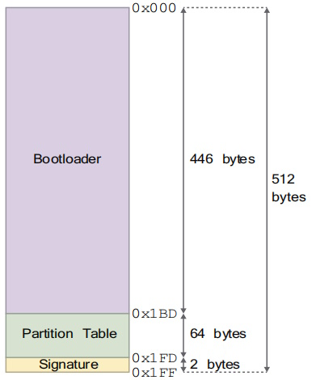

BIOS / UEFI
Das BIOS (Basic Input Output System) oder heutzutage das UEFI ist das erste Programm das der Computer startet. Es sammelt einige Systemdaten und setzt die Grundfunktionen auf. Dannach lädt er die erstern 512 bytes des Betriebsystems.
Das BIOS (Basic Input Output System) oder heutzutage das UEFI ist das erste Programm das der Computer startet. Es sammelt einige Systemdaten und setzt die Grundfunktionen auf. Dannach lädt er die erstern 512 bytes des Betriebsystems.
Der Bootloader ist der erste Sector der sog. Bootsector. Dieser hat die Hauptaufgabe den Rest des Betriebsystems zu laden. Auserdem kann der Bootloader System Information laden. => Der Bootloader lädt den Kernel.
...
...